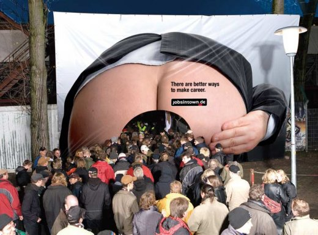

Рынок газет по трудоустройству в Кемерово никак не дает покоя ни существующим на рынке издателям, не приезжим гастролёрам.

Сегодня вышел первый номер первого «журнала» посвященного трудоустройству. И таким образом в Кемерово сейчас выходит уже 6 разных изданий посвященных именно поиску работы.
Формат «журнала», на мой взгляд, хоть и несколько удобней в чтении, но все же газета как-то берет своей традиционностью. К тому же качество полиграфии чуть ли не на уровне Cosmopolitan ставит под большой вопрос всю рентабельность бизнеса. Еще понятно, когда газета «Работа в Кузбассе» прокачивает объем никем не читаемыми статьями. Но печатать вакансии в журнале с мелованными страницами, по-моему все равно, что мыть машину в пиджаке и белой рубашке.